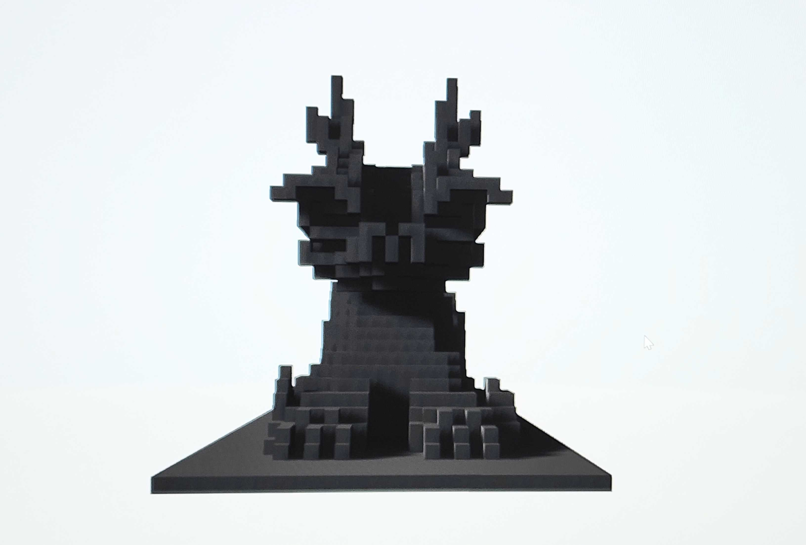

This is a pixel-style dragon that I created in Minecraft as a representation of cultural significance. The dragon symbolizes power, wisdom, and protection in many traditions, and I wanted to express those ideas through a digital medium. By using the blocky, pixelated form of Minecraft, I combined modern gaming creativity with traditional symbolism to show how culture can evolve and adapt in new forms of art